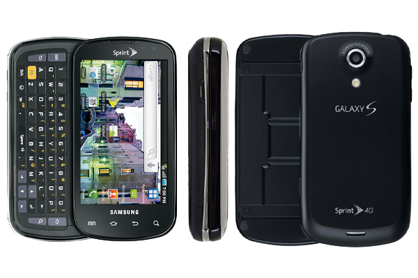

삼성 갤럭시 S 에픽 4G
1. 외관

삼성전자가 2010년 스프린트 용으로 공개한 갤럭시S의 파생모델.
2. 사양
| 프로세서 | 삼성 엑시노스 3110 SoC. ARM Cortex-A8 1 GHz CPU, PowerVR SGX540 200 MHz GPU | ||
| 메모리 | 512 MB RAM, 1 GB OneNAND 내장 메모리, micro SDHC (최대 32 GB 지원) | ||
| 디스플레이 |
4.0인치 WVGA(480 x 800) RG-BG 펜타일 서브픽셀 방식의 SMD Super AMOLED 멀티터치 지원 정전식 터치 스크린 |
||
| 네트워크 | 기본 | Mobile WiMAX, CDMA & EV-DO Rev. A | Wi-Fi 802.11b/g/n, 블루투스 3.0 |
| - | - | ||
| 카메라 | 전면 30만 화소, 후면 500만 화소 AF 및 LED 플래시 | ||
| 배터리 | Li-Ion 1500 mAh | ||
| 운영체제 | 안드로이드 2.1 (Eclair) → 2.2 (Froyo) → 2.3 (Gingerbread) | ||
| 규격 | 65 x 124 x 14 mm, 155 g | ||
3. 상세
본가와 가장 큰 차이점은 4줄 슬라이트 쿼티 자판을 탑재했다는 것이다.
또한 다른 미국 내수형 기기들과 마찬가지로 터치 4키를 적용했다.
내장 메모리는 본가보다는 갤럭시 K처럼 1 GB OneNAND를 탑재, 이것을 시스템 파티션과 프로그램 설치 메모리로 몽땅 사용해서 사용자가 사용할 수 있는 FAT32 포맷형식의 용량이 없다.
스프린트의 통신망 사정에 따라 EV-DO Rev. A와 Mobile WiMAX를 지원한다.